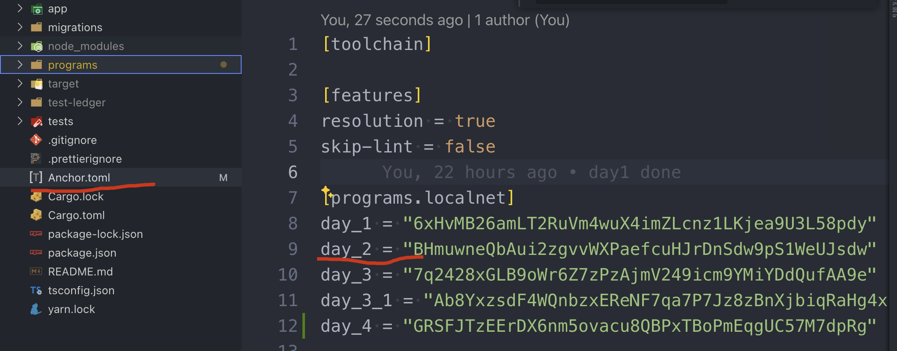
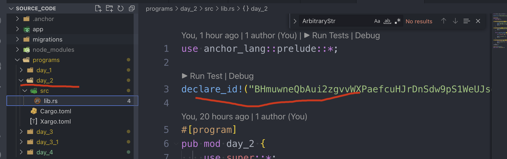

Arithmetic_Types
we will impl the same contract as solidity:
contract Day2 {
event Result(uint256);
event Who(string, address);
function doSomeMath(uint256 a, uint256 b) public {
uint256 result = a + b;
emit Result(result);
}
function sayHelloToMe() public {
emit Who("Hello World", msg.sender);
}
}
can get the code from day_2
git checkout day_2
Create new program
run command below to create a new program under the same project
anchor new day_2
Anchor will help us to create a new program id once we execute this new command.

and apply this to the new program within the soucecode.

it will fail to deploy if these two places are not match, if so, it can be easily fix by executing the sync command
anchor keys sync
Currently, the directory will looks like:
├── programs
│ ├── day_1
│ │ ├── Cargo.toml
│ │ ├── Xargo.toml
│ │ └── src
│ │ └── lib.rs
│ └── day_2
│ ├── Cargo.toml
│ ├── Xargo.toml
│ └── src
│ └── lib.rs
Basic Types
update day_2/lib.rs
use anchor_lang::prelude::*;
declare_id!("F6jicE4vCRP3yggTvoLyebh59pm8RnpcZ8rZRiJe9JQW");
#[program]
pub mod day_2 {
use super::*;
// test1: u64/string
pub fn initialize2(ctx: Context, a: u64, b: u64, message: String) -> Result<()> {
// msg!("Greetings from: {:?}", ctx.program_id);
msg!("message: {:?}", message);
msg!("You sent {} and {}", a, b);
Ok(())
}
// test2: Vec
pub fn array(ctx: Context, arr: Vec) -> Result<()> {
msg!("Your array {:?}", arr);
Ok(())
}
}
#[derive(Accounts)]
pub struct Initialize {}
create new test file
import * as anchor from "@coral-xyz/anchor";
import { Program } from "@coral-xyz/anchor";
import { Day2 } from "../target/types/day_2";
describe("day_2", () => {
// Configure the client to use the local cluster.
anchor.setProvider(anchor.AnchorProvider.env());
const program = anchor.workspace.Day2 as Program;
it("Is initialized!", async () => {
// Add your test here.
const tx = await program.methods.initialize2(
new anchor.BN(777),
new anchor.BN(888),
"hello world"
).rpc();
console.log("Your transaction signature", tx);
});
it.only("Initializes with vector", async () => {
const tx = await program.methods.array([new anchor.BN(777),
new anchor.BN(888)]).rpc();
console.log("Your transaction signature", tx);
});
});
build and test, all should be good!
Overflow
add two more functions
pub fn overflow_unsafe(ctx: Context, a: u64, b: u64) -> Result<()> {
// test1: overflow silently
let x_unsafe: u64 = a - b;
msg!("x_unsafe: {}", x_unsafe);
Ok(())
}
pub fn overflow_safe(ctx: Context, a: u64, b: u64) -> Result<()> {
let x_safe: u64 = a.checked_sub(b).unwrap();
msg!("x_safe: {}", x_safe);
Ok(())
}
udpate day_2.ts
// when overflow-checks = false
it.only("should not overflow on 100 - 200", async () => {
const tx = await program.methods.overflowUnsafe(
new anchor.BN(100),
new anchor.BN(200)).rpc();
// output:
// Program log: Instruction: OverflowUnsafe
// Program log: x_unsafe: 18446744073709551516
});
// when overflow-checks = true
it.only("should overflow on 100 - 200", async () => {
const tx = await program.methods.overflowUnsafe(
new anchor.BN(100),
new anchor.BN(200)).rpc();
});
// output:
// should overflow on 100 - 200:
// Error: Simulation failed.
// Message: Transaction simulation failed: Error processing Instruction 0: Program failed to complete.
it.only("should panic when overflow", async () => {
const tx = await program.methods.overflowSafe(
new anchor.BN(0),
new anchor.BN(1)).rpc();
// output:
// Program log: Instruction: OverflowSafe
// Program log: panicked at programs/day_2/src/lib.rs:30:44:
// called `Option::unwrap()` on a `None` value
});
Change the flag: overflow-checks = false and see the difference.
[workspace]
members = ["programs/*"]
resolver = "2"
[profile.release]
# will check globaly, and throw error during the compilation, gas costly
overflow-checks = true
# won't check, and would need to add protection within the code, but gas efficiency
# overflow-checks = false
lto = "fat"
codegen-units = 1
[profile.release.build-override]
opt-level = 3
incremental = false
codegen-units = 1